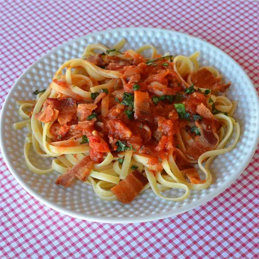

Home
Amatriciana

This is a classic Italian pasta dish. Use fresh basil when it's in season; at other times, use fresh flat-leaf parsley.
Ingredients
- 4 slices bacon, diced.
- ½ cup chopped onion
- 1 teaspoon minced garlic
- ¼ teaspoon crushed red pepper flakes
- 2 (14.5 ounce) cans stewed tomatoes
- 1 pound linguine pasta, uncooked
- 1 tablespoon chopped fresh basil
- 2 tablespoons grated Parmesan cheese
Steps
- Cook diced bacon in a large saucepan over medium high heat until crisp, about 5 minutes. Drain all but 2 tablespoons of drippings from the pan.
- Add onions, and cook over medium heat about 3 minutes. Stir in garlic and red pepper flakes; cook 30 seconds. Add canned tomatoes, undrained; simmer 10 minutes, breaking up tomatoes.
- Meanwhile, cook the pasta in a large pot of 4 quarts boiling salted water until al dente. Drain.
- Stir basil into the sauce, and then toss with cooked pasta. Serve with grated Parmesan cheese.